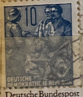
| SOURCE | TITLE| IMAGE MATCH | click to source page |
| HipStamp | Germany DDR 1954 - FDC - Scott #218 | Europe - Germany & Colonies - Germany DDR, General Issue Stamp / HipStamp | 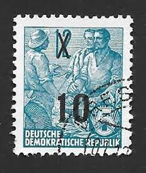 |
| eBay | DDR #Mi578A MNH 1957 Five-Year Plan [Perf 13x12½][331b] | eBay | 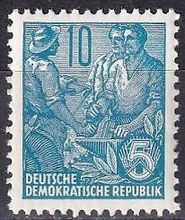 |
| Old-Stamps.com | Deutsche Demokratische Republik / DDR 1957 | 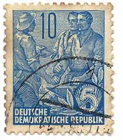 |
| Amazon.com | Amazon.com: DDR 453 unmounted Mint/Never hinged ** MNH 1955 Five-Year Plan (IV) (Stamps for Collectors) : Toys & Games | 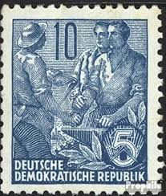 |
| The Itty Bitty Stamp Company | Germany DDR Scott # 331 Mint Never Hinged – The Itty Bitty Stamp Company | 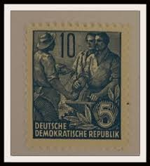 |
| Shutterstock | 1,980 Reich Stamp Royalty-Free Images, Stock Photos & Pictures | Shutterstock | 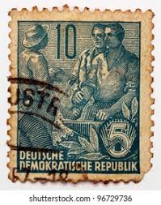 |
| HipStamp | DDR 227 workers | Europe - Germany & Colonies - Germany DDR, General Issue Stamp / HipStamp | 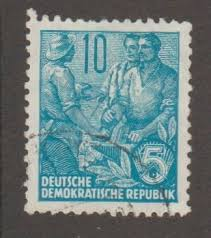 |
| Poppe Stamps | Poppe Stamps: German Democratic Republic, 1953, E159, Workers, Industries, Agriculture And Farming - stamps for sale by theme and country | 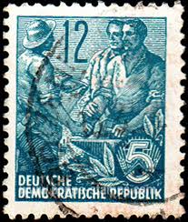 |
| HipStamp | DDR, East Germany, 1953-56, Five Year Plan, 10pf, used | Europe - Germany & Colonies - Germany DDR, Stamp / HipStamp | 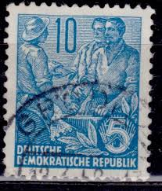 |
| kine-eksaarde.be | Stamps Canada Post Prophila Collection DDR 750 Various Special Stamps (Stamps For Collectors DDR Stamps 150 Different Collector Set Vintage |  |
| Todocolección | alemania deutsches reich 5 mark posthorn - Buy Antique stamps of Germany on todocoleccion | 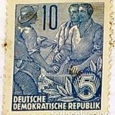 |
| Shutterstock | Vintage German Stamps: Over 15,421 Royalty-Free Licensable Stock Photos | Shutterstock | 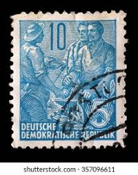 |
| Shutterstock | Workers Fitters Exchange Experience On 1953 Stock Photo 2642387495 | Shutterstock | 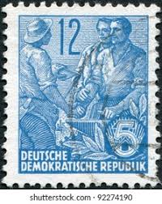 |
| lastdodo.com | DDR & crucifixes (portrait) Stamp catalogue - LastDodo | 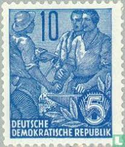 |
| eBay | East Germany - 1953 - Definitives - Five-Year Plan - 12Pfg - Used - #6 | eBay | 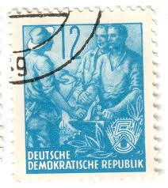 |
| Wikimedia.org | File:Stamps of Germany (DDR) 1955, MiNr 0453.jpg - Wikimedia Commons | 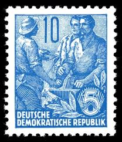 |
| Stamp Auction Network | Prices Realized | 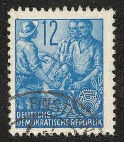 |
| Poppe Stamps | Poppe Stamps: German Democratic Republic, 1953, E159, Workers, Industries, Agriculture And Farming - stamps for sale by theme and country | 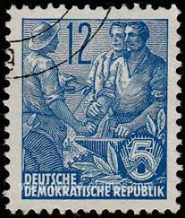 |
| PICRYL | Stamps of Germany (DDR) 1954, MiNr 0436 - PICRYL - Public Domain Media Search Engine Public Domain Search | 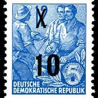 |
| Old-Stamps.com | Deutsche Demokratische Republik / DDR 1955 |  |
| Shutterstock | 4+ Thousand Stamp East Germany Royalty-Free Images, Stock Photos & Pictures | Shutterstock | 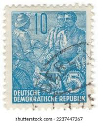 |
| Poppe Stamps | Poppe Stamps: German Democratic Republic, 1954, E191, Fairs, People - stamps for sale by theme and country | 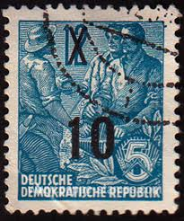 |
| HipStamp | Germany DDR 1955 - U - Scott #227 | Europe - Germany & Colonies - Germany DDR, General Issue Stamp / HipStamp | 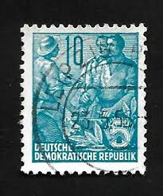 |
| Flickr | DDR | Jusotil_1943 | Flickr | 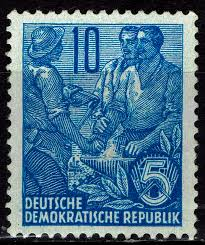 |
| ebid.net | Great Britain 1938 King George VI KG VI 3d Used Stamp, on eBid United States | 217585856 |  |
| Colnect | Stamp: Agricultural and Industrial Workers - Surcharged (Germany, Democratic Republic (DDR)(Five-year Plan - Surcharged) Mi:DD 437IgXI,Sn:DD 218,Yt:DD 178,Sg:DD E191,Un:DD 437 📮 | 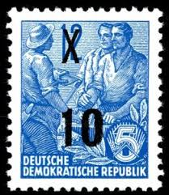 |
| HipStamp | 1955, Germany DDR 10 pfg, Used, Sc 227 | Europe - Germany & Colonies - Germany DDR, General Issue Stamp / HipStamp | 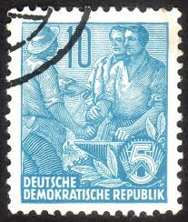 |
| Amazon.com | Amazon.com: DDR 410 1953 Five-Year Plan (II) (Stamps for Collectors) : Toys & Games | 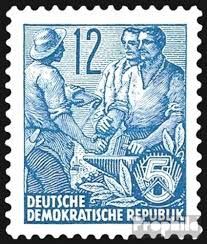 |
| Shutterstock | 3,577 Stamp East Germany Royalty-Free Images, Stock Photos & Pictures | Shutterstock | 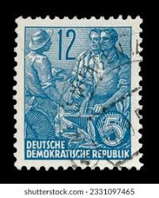 |
| Shutterstock | Germany Ddr Circa 1951 Postage Stamp Stock Photo 1921653512 | Shutterstock | 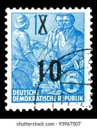 |
| Poppe Stamps | Poppe Stamps: German Democratic Republic, 1953, E159, Workers, Industries, Agriculture And Farming - stamps for sale by theme and country | 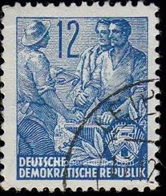 |
| Dreamstime.com | 2,851 Historic Ddr Stock Photos - Free & Royalty-Free Stock Photos from Dreamstime - Page 26 | 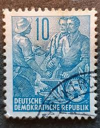 |
| Shutterstock | 76+ Thousand Ddr(the German Democratic Republic) Royalty-Free Images, Stock Photos & Pictures | Shutterstock | 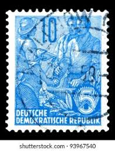 |
| Alamy | The year 1957 hi-res stock photography and images - Alamy | 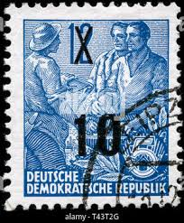 |
| Poppe Stamps | Poppe Stamps: German Democratic Republic, 1953, E159, Workers, Industries, Agriculture And Farming - stamps for sale by theme and country | 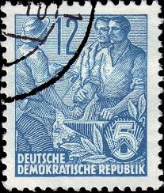 |
| Etsy | East German Stamps - Etsy UK | 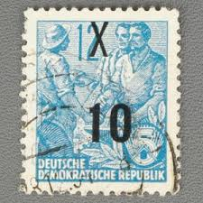 |
| Poppe Stamps | Poppe Stamps: German Democratic Republic, 1953, E311, Workers, Industries, Agriculture And Farming, Workers, Industries, Agriculture And Farming - stamps for sale by theme and country | 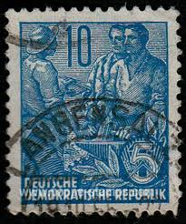 |
| Shutterstock | 14+ Thousand Gdr/ Royalty-Free Images, Stock Photos & Pictures | Shutterstock | 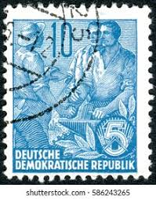 |
| Shutterstock | Pasuruan Indonesia August 29 2025 Postage Stock Photo 2677260497 | Shutterstock | 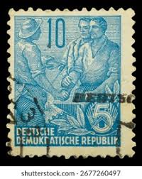 |
| Shutterstock | Gdr Circa 1953 Post Stamp Printed Stock Photo 308898269 | Shutterstock | 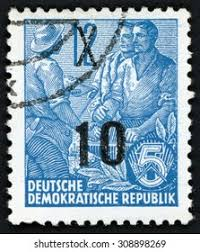 |
| BidCurios | 1953 Germany 10 Pf "Five-Year Plan" MNH Stamp - BidCurios | 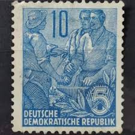 |
| Alamy | Worker, peasant and intellectual, postage stamp, Germany, 1953 Stock Photo - Alamy |  |
| Poppe Stamps | Poppe Stamps: German Democratic Republic, 1953, E159, Workers, Industries, Agriculture And Farming - stamps for sale by theme and country | 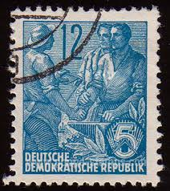 |
| eBay | DDR #Mi453 MNH 1955 Five-Year Plan Steelworker [227] | 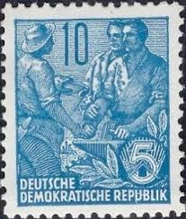 |
| Old-Stamps.com | Deutsche Demokratische Republik / DDR 1954 | 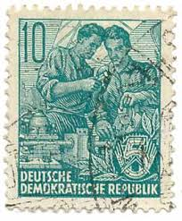 |
| Dreamstime.com | Farmer Shows Off Vintage Tractor in Michigan USA Editorial Stock Image - Image of farming, industrial: 94588389 | 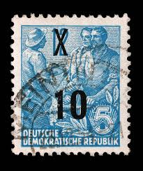 |
| eBay | GERMANY BERLIN STAMP MNH [SALE] [Choose 10pc of MINT is $3.5] unused WM1049 | eBay | 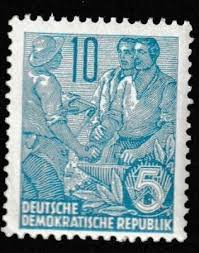 |
| PICRYL | 53 1953 stamps of the german democratic republic Images: PICRYL - Public Domain Media Search Engine Public Domain Search | 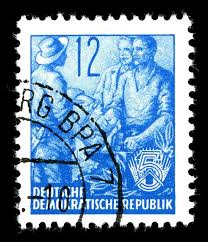 |
| Amazon.ca | DDR 437 unmounted Mint/Never hinged ** MNH 1954 Five-Year Plan (III) (New Wertauf (Stamps for Collectors), Printing & Stamping - Amazon Canada | 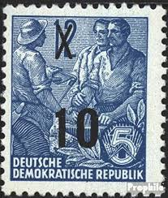 |
| Alamy | Postal worker germany hi-res stock photography and images - Alamy | 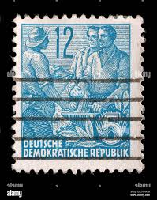 |
| eBay | Deutsche Foreign 10c Stamp Used - #A1149 | eBay | 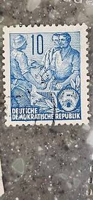 |
| Shutterstock | German Democratic Republic Circa 1958 Stamp Stock Photo 72622198 | Shutterstock | 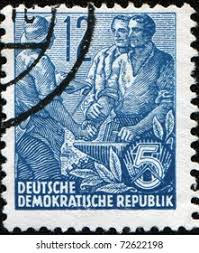 |
| Dreamstime.com | 2,355 Territory Plan Stock Photos - Free & Royalty-Free Stock Photos from Dreamstime | 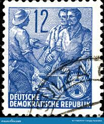 |
| Poppe Stamps | Poppe Stamps: German Democratic Republic, 1954, E191, Fairs, People - stamps for sale by theme and country | |
| HipStamp | Germany DDR 1955 - U - Scott #227 | Europe - Germany & Colonies - Germany DDR, General Issue Stamp / HipStamp | |
| eBay | Germany - DDR - 1954 Definitives - Five-Year Plan Surcharged 10/12 Pfg | eBay | |
| Stamp Community Forum | Trying To ID 2 DDR Stamps - Stamp Community Forum | |
| Shutterstock | Pasuruan, Indonesia - 29 de agosto Foto de stock 2677260497 | Shutterstock | |
| Shutterstock | 6+ Thousand Ddr Stamp Royalty-Free Images, Stock Photos & Pictures | Shutterstock | |
| eBay | DDR 578B Securities horizontal Couple out archery used 1957 Five-Year Plan | eBay |
_1955,_MiNr_0453.jpg){kind=link}